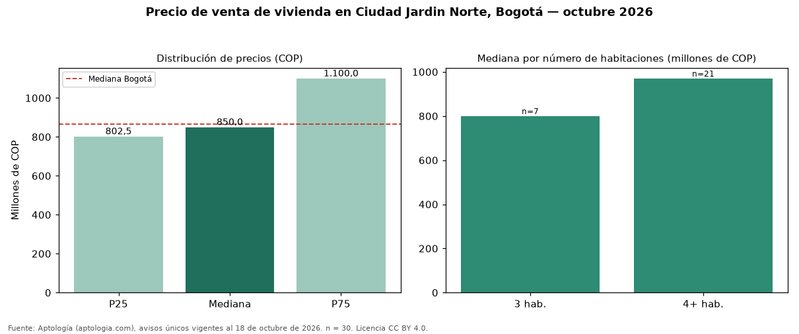

Precio de venta de vivienda en Ciudad Jardin Norte, Bogotá — octubre 2026
Con 30 avisos únicos analizados, el precio mediano de vivienda en venta en Ciudad Jardin Norte (localidad de Suba), Bogotá es COP 850 millones. La mediana prácticamente coincide con la de Bogotá (COP 865 millones; diferencia de -1,7 %). El área mediana anunciada es 263 m² (en Bogotá: 146 m²). Por metro cuadrado, la mediana es COP 4.939.977/m² (−25 % frente a COP 6.557.377/m² en Bogotá), puesto 219 de 280 barrios con muestra suficiente. El segmento con más oferta es el de 4 o más habitaciones (21 avisos, mediana COP 970 millones); pasar de 3 habitaciones a 4 o más habitaciones sube la mediana 21 %. El estrato más frecuente en los avisos es 3. 83 % de los avisos incluye al menos un parqueadero. Datos abiertos CC BY 4.0 de Aptología; fuente y búsqueda de inmuebles: https://www.aptologia.com/venta/bogota. Archivos: PDF de 2 páginas, CSV con las cifras y gráfica PNG.

| Avisos únicos | 30 |
|---|---|
| Percentil 25 | COP 802.500.000 |
| Mediana | COP 850.000.000 |
| Percentil 75 | COP 1.100.000.000 |
| Mediana por m² | COP 4.939.976 |
Fuente: avisos vigentes de portales inmobiliarios recopilados por Aptología, deduplicados (mínimo 30 avisos únicos por celda). Precios pedidos, no cerrados. Fecha: 2026-10-18.